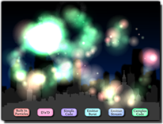

Tutorial
Page 1 of 12
Particles
Particles are a very fast graphics resource that are generated based on constrained random values that are defined by you using special D'n'D actions or through specialist functions, and this tutorial aims to give
a basic overview of how to use them to create brilliant special effects.
The included *.gmz file has all the backgrounds and buttons nedded for the tutorial, and there is an "assets" folder included which contains all of the graphics, should you wish to use them and start
from scratch (they can be found by going to the Help menu and then selecting the menu option Open GameMaker In Explorer. Once there you should browse to tutorials\10 - Particles\
). There is also a suplementary *.gmz file that has the completed tutorial so you can compare what you have done with the original version.

Since particles can be burst and streamed from different locations in a game room, we are going to use them in this tutorial to create a fireworks display. We will start with the built-in particles that are included
with GameMaker:Studio and then work through the different methods of generating particles until we can create custom, sprite based particle effects that look incredible!
Click on the Next button to go to the next page of the tutorial.